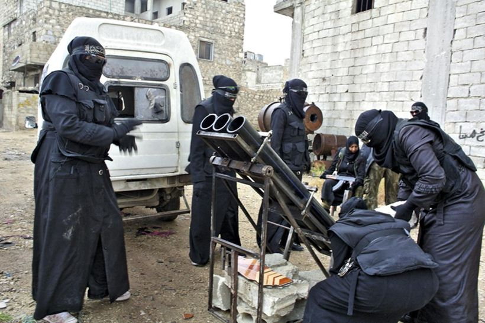

Chassez le naturel et il revient au galop ! Plein de bon sens, le gouvernement français avait osé prendre quelques distances avec l'Etat profond US, belliciste, jusqu'au-boutiste et particulièrement sanglant quand il en va de ses intérêts. On aurait pu alors croire que le départ de Fabius, fin 2015, allait préfigurer une nouvelle ère dans le traitement européen (pas occidental !) du dossier syrien et une alliance de revers anti-salafiste entre la France et la Russie. Quelle naïveté impardonnable ! Début février 2016, le Point publie un article dont le contenu rappelle... en tout point, l' « indignation » française face aux « crimes de guerre » commis par les bombardiers russes dans certains quartiers d'Alep.
Voici ce que nous lisions le 3 février 2016: « Paris condamne l'offensive du régime syrien, avec le soutien russe, pour encercler puis asphyxier Alep et ses centaines de milliers d'habitants » (...). Quelques lignes plus tard : « L'armée syrienne, soutenue par l'armée russe, a réussi à resserrer l'étau autour des rebelles (...) après avoir coupé leur principale route d'approvisionnement. Un nouveau succès pour le régime depuis l'intervention de Moscou dans le conflit ».
On tombe des nues attendu que :
Même l'Observatoire anglo-syrien des droits de l'homme qui n'a jamais eu aucune légitimité en Syrie n'arrive pas à citer ne serait-ce qu'un groupe armé (dit rebelle) non-salafiste.

ALEP : des rebelles « modérées » de l’Armée Syrienne Libre…
Le but final est la reprise d'Alep et la stabilisation tant de la ville que de la région. Cet impératif présuppose le retour de tous les quartiers d'Alep sous le contrôle de l'armée arabe syrienne.
L'expression « régime syrien » est dénuée de sens. Si légitimité est synonyme de soutien populaire massif, il vaut mieux parler du « régime de Hollande ».
Le conflit syrien étant parsemé de tragiques déjà-vu, on apprend, le 25 septembre, que Ban Ki-moon est « consterné » par l'escalade militaire liée à la reprise d'Alep, là encore, avec le soutien de l'aviation russe. Le 26 septembre, un journaliste du Point publie un article dans lequel il insiste lourdement sur la barbarie des frappes, car les pilotes russes auraient utilisé des bombes à sous-munitions.
Après une longue série d'évocations à emphase sensationnaliste, l'article se clôt par une question digne d'un aphorisme : « La faute à la Russie ? ». Remettons les points sur les i.
La Russie n'a jamais signé la convention sur la non-utilisation des armes à sous-munitions ce qui est le cas de la quasi-majorité des grandes puissances qui en ont dans leur arsenal.
Interrogés en avril sur l'éventuelle utilisation de ce type de bombe, les experts militaires russes ont été formels : il s'agit de bombes à fragmentation faciles à confondre avec les bombes à sous-munitions. Cette réponse n'a jamais été médiatisée par les médias occidentaux qui avaient fondé leurs accusations sur deux captures d'écran publiées par ... Russia Today et Sputnik !
L'utilisation de bombes à sous-munitions dans les villes n'a aucun sens. Elles sont larguées en terrain vague.
Les cris d'orfraie des journaleux du mainstream médiatique français sont d'autant plus déplacés que le Ministère des Affaires étrangères a caché une série de dérapages commis en Irak fin 2015. Ainsi :
Le 25 octobre 2015, un Rafale cible une école primaire située près de Mossoul. 28 écoliers sont tués sur le coup. Le gouvernement essaye alors de nier, sans grande conviction, son implication. L'affaire est étouffée. Malgré une ribambelle de promesses, Mossoul, la capitale de l'EI en Irak, n'a toujours pas été repris.
Le bombardement français de Raqqa du 26 octobre 2015 aussi connu sous le nom d'opération « Chammal » a lui aussi emporté des vies d'enfants. C'est un fait confirmé par l'OSDH, l'Observatoire syrien des droits de l'homme dont on connaît la position farouchement anti-Assad. Et que dire de la ville turkmène de Tall Afar avec ses multiples victimes collatérales ?
Pour remonter un peu dans le temps et sortir des frontières syriennes, je vous conseille la lecture de la Lettre Ouverte de médecins russes au Président de la Fédération de Russie (voir Note Editorial de Global Research) qui fait état, sur un ton glaçant de neutralité, des crimes de l'OTAN et des USA contre les habitants de la banlieue de Tripoli dont le bombardement d'une maternité pour femmes atteintes de maladies cardiovasculaires. C'était en 2011. Où était Ban-Ki moon, en fonction depuis 2007 ?
Le 28 septembre, Washington passe aux menaces. Kerry se dit prêt à suspendre la collaboration US avec la Russie accusant cette dernière, de pair avec la France, de crimes de guerre comparables à ceux de l'EI (SIC). Le partenariat stratégique US/Russie est ajusté à la cessation des bombardements d'Alep, d'une part, au retour à un cessez-le-feu généralisé, de l'autre. Ce qui revient à demander à l'AAS d'arrêter la reprise d'une ville dont plusieurs grands quartiers sont aux mains des salafistes de l'EI et à d'autres franges apparentées, d'une part, de l'autre, donner un temps de répit aux « rebelles » qui en profiteront pour recevoir une aide médicale, logistique et militaire.
Comme les masques sont définitivement tombés, cela ne m'étonnerait pas d'apprendre que les Américains essayent d'évincer les troupes russes du Castello, voire, pour en finir au plus vite, qu'ils essayent de miser sur un ou des traîtres dans l'entourage d'Assad. Par contre, ce qui ne cesse de m'étonner, peut-être parce que je n'arrive pas à être objective, c'est le vassalisme mal assumé mais flagrant du gouvernement français qui en plus n'a pas l'Atlantique pour rempart.